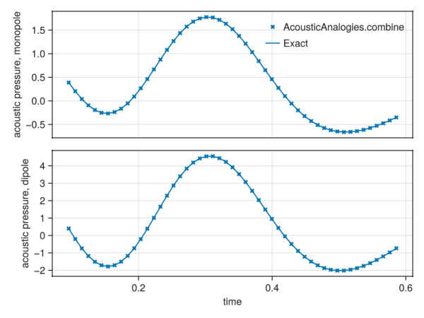
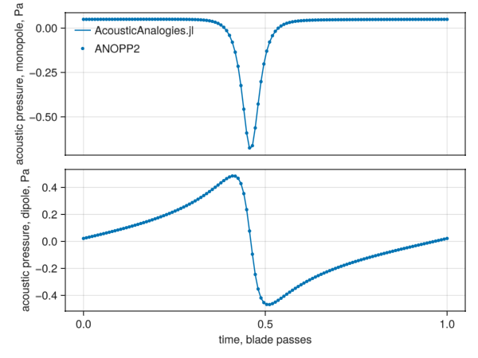

Software Quality Assurance
Tests
AcousticAnalogies.jl uses the usual Julia testing framework to implement and run tests. The tests can be run locally after installing AcousticAnalogies.jl, and are also run automatically on GitHub Actions.
To run the tests locally, from the Julia REPL, type ] to enter the Pkg prompt, then
(jl_jncZ1E) pkg> test AcousticAnalogies
Testing Running tests...
Test Summary: | Pass Total Time
Advanced time tests | 2 2 7.0s
Test Summary: | Pass Total Time
Combine F1AOutput tests | 8 8 2.7s
Test Summary: | Pass Total Time
F1A tests | 2 2 5.9s
Test Summary: | Pass Total Time
CCBlade private utils tests | 1 1 0.3s
Test Summary: | Pass Total Time
CCBlade CompactF1ASourceElement test | 12 12 3.4s
Test Summary: | Pass Total Time
ANOPP2 Comparison | 176 176 5.9s
Test Summary: | Time
ForwardDiff test | None 14.1s
Testing AcousticAnalogies tests passed
(jl_jncZ1E) pkg> (The output associated with installing all the dependencies the tests need isn't shown above.)
Here is a description of each category of test:
Advanced Time Tests
The F1A calculation is concerned with roughly two types of objects: acoustic sources and acoustic observers. Acoustic sources are things that make noise, and, for AcousticAnalogies.jl, would typically be a portion of some type of aerodynamic lifting surface (like a propeller blade). An acoustic observer is just a fancy name for a person or microphone that will hear the noise emitted by the source. Both the source and observer may be stationary, but more likely will be moving.
During the F1A calculation, we need to know the time at which an acoustic wave emitted by the source encounters the observer. Mathematically, we need to solve the equation
\[R(t) = t - \left( \tau + \frac{|\vec{x}(t) - \vec{y}(τ)|}{c_0} \right) = 0\]
where
- $τ$ is the time the source has emitted an acoustic disturbance
- $t$ is the time the observer encounters the acoustic disturbance
- $\vec{y}$ is the position of the source
- $\vec{x}$ is the position of the observer
- $c_0$ is the speed of sound
AcousticAnalogies.jl currently uses an advanced time approach to solving this equation. This means we start with knowledge of $\tau$ and then calculate $t$—we "advance" the source time to the observer time by adding the amount of time it takes for the acoustic disturbance to travel from $y$ to $x$.
Now, the $R(t) = 0$ equation is quite easy to solve if the observer is stationary. In that case, $x$ is not a function of $t$, and so solving for $t$ just involves moving everything in the parenthesis to the right-hand side. But if the observer is moving, things are more complicated. It may be impossible to solve for $t$ explicitly in that case. It turns out, however, that there is an explicit solution for $t$ in the advanced time approach if the observer is moving at a constant rate (see D. Casolino http://dx.doi.org/10.1016/S0022-460X(02)00986-0). The constant velocity case is actually quite handy, since it's what we need to compare to wind tunnel data.
So, how do we test that we've implemented the solution to the $R(t) = 0$ advanced time equation correctly? In AcousticAnalogies.jl, we just use the nonlinear solver provided by NLsolve.jl, and compare its solution to AcousticAnalogies.jl. Here's how to do that:
using AcousticAnalogies: AcousticAnalogies
using LinearAlgebra: norm
using NLsolve: NLsolve
using StaticArrays
# Create a source element for the test.
# The only things about the source element that matters to the advanced # time calculation is the time and position, and the speed of sound.
# So everything else will be take on dummy values.
τ = 2.5
y = @SVector [-4.0, 3.0, 6.0]
c0 = 2.0
dummy0 = 1.0
dummy3 = @SVector [0.0, 0.0, 0.0]
se = AcousticAnalogies.CompactF1ASourceElement(dummy0, c0, dummy0, dummy0, y, dummy3, dummy3, dummy3, dummy3, dummy3, τ, dummy3)
# Define a function that solves the advanced time equation using `nlsolve.
function adv_time_nlsolve(se, obs)
# Create the residual equation that we'll solve.
# nlsolve assumes the residual function takes in and returns arrays.
R(t) = [t[1] - (se.τ + norm(obs(t[1]) .- se.y0dot)/se.c0)]
# Solve the advanced time equation.
result = NLsolve.nlsolve(R, [1.0], autodiff=:forward)
if !NLsolve.converged(result)
@error "nlsolve advanced time calculation did not converge:\n$(result)"
end
t_obs = result.zero[1]
return t_obs
end
# Let's try it out.
# First, a stationary observer:
x0 = @SVector [-3.0, 2.0, 8.5]
obs = AcousticAnalogies.StationaryAcousticObserver(x0)
t_exact = AcousticAnalogies.adv_time(se, obs)
t_nlsolve = adv_time_nlsolve(se, obs)
println("stationary observer, exact: $(t_exact), nlsorve: $(t_nlsolve), difference = $(t_exact - t_nlsolve)")
# Next, a constant velocity observer:
t0 = 3.5
x0 = @SVector [-2.0, 3.5, 6.25]
v = @SVector [-1.5, 1.5, 3.25]
obs = AcousticAnalogies.ConstVelocityAcousticObserver(t0, x0, v)
t_exact = AcousticAnalogies.adv_time(se, obs)
t_nlsolve = adv_time_nlsolve(se, obs)
println("constant velocity observer, exact: $(t_exact), nlsorve: $(t_nlsolve), difference = $(t_exact - t_nlsolve)")stationary observer, exact: 3.936140661634507, nlsorve: 3.936140661634507, difference = 0.0
constant velocity observer, exact: 3.529628622915939, nlsorve: 3.5296286229017424, difference = 1.4196643860486802e-11Almost identical results, so things are good!
Combine F1AOutput Tests
The function noise(se::CompactF1ASourceElement, obs::AcousticObserver) uses Farassat's formulation 1A to perform a prediction of the noise experienced by one observer obs due to one acoustic source se. Typically we will not have just one source, however. For example, the guided example in the docs uses 30 "source elements" to model each propeller blade. But we're interested in the acoustics experienced by obs due to all of the source elements, not just one. So, we need to combine the output of noise for one observer and all of the source elements. In AcousticAnalogies.jl, this is done by interpolating the time history of each source element's acoustics (the "pressure time history") onto a common chunk of time, and then adding them up. No big deal.
But, how do we test the "interpolating and adding" routine, aka AcousticAnalogies.combine? That's pretty simple, actually: we just define some arbitrary functions that we'll use to create some pressure time histories, add them using the combine routine, and then compare that result to those created via evaluating those arbitrary functions on the same time grid used by the combine routine. If those match, then the test passes, and everything in the combine routine should be good. Let's try that:
using AcousticAnalogies: AcousticAnalogies
using AcousticMetrics: AcousticMetrics
using GLMakie
using Random
# Goal is to verify that the code can faithfully combine two acoustic pressures on different time "grids" onto a single common grid.
# These will be our made up functions:
fa(t) = sin(2*pi*t) + 0.2*cos(4*pi*(t-0.1))
fb(t) = cos(6*pi*t) + 0.3*sin(8*pi*(t-0.2))
# Now we'll make some made up time grids.
n = 101
t1 = collect(range(0.0, 1.0, length=n))
dt = t1[2] - t1[1]
# Add a bit of random noise to the time grid.
# Make sure that the amount of # randomness isn't large enough to make the time values non-monotonically increasing (i.e., they don't overlap).
noise = 0.49.*dt.*(1 .- 2 .* rand(size(t1)...))
t1 .+= noise
t2 = collect(range(0.1, 1.1, length=n))
dt = t2[2] - t2[1]
t2 .+= 0.49.*dt.*(1 .- 2 .* rand(size(t2)...))
# Now let's create a bunch of pressure time histories on the time grids we just defined.
apth1 = @. AcousticAnalogies.F1AOutput(t1, fa(t1), 2*fa(t1))
apth2 = @. AcousticAnalogies.F1AOutput(t2, fb(t2), 3*fb(t2))
# Calculate the "exact" answer by coming up with a common time, then evaluating the test functions directly on the common time grid.
period = 0.5
n_out = 51
t_start = max(t1[1], t2[1])
t_common = t_start .+ (0:n_out-1).*(period/n_out)
p_m = @. fa(t_common)+fb(t_common)
p_d = @. 2*fa(t_common)+3*fb(t_common)
even_length = iseven(n_out)
apth_test = AcousticAnalogies.F1APressureTimeHistory{even_length}(p_m, p_d, step(t_common), first(t_common))
# Put all the acoustic pressures in one array.
apth = hcat(apth1, apth2)
# Combine.
apth_out = AcousticAnalogies.combine(apth, period, n_out)
# Plot the two solutions.
fig2 = Figure()
ax2_1 = fig2[1, 1] = Axis(fig2, xlabel="time", ylabel="acoustic pressure, monopole")
ax2_2 = fig2[2, 1] = Axis(fig2, xlabel="time", ylabel="acoustic pressure, dipole")
scatter!(ax2_1, AcousticMetrics.time(apth_out), AcousticAnalogies.pressure_monopole(apth_out); marker=:x, label="AcousticAnalogies.combine")
scatter!(ax2_2, AcousticMetrics.time(apth_out), AcousticAnalogies.pressure_dipole(apth_out); marker=:x)
lines!(ax2_1, AcousticMetrics.time(apth_test), AcousticAnalogies.pressure_monopole(apth_test); label="Exact")
lines!(ax2_2, AcousticMetrics.time(apth_test), AcousticAnalogies.pressure_dipole(apth_test))
hidexdecorations!(ax2_1, grid=false)
axislegend(ax2_1; merge=true, unique=true, framevisible=false, bgcolor=:transparent, position=:rt)
save("combine_test.png", fig2)┌ Warning: Keyword argument `bgcolor` is deprecated, use `backgroundcolor` instead.
└ @ Makie ~/.julia/packages/Makie/6KcTF/src/makielayout/blocks/legend.jl:22
Right on top of each other.
F1A Tests
The most complicated part of AcousticAnalogies.jl is the implementation of the F1A calculation itself. For example, the compact form of the F1A dipole term as implemented in AcousticAnalogies.jl (neglecting surface deformation) is
\[4 \pi c_0 p_d = \int_{L=0} \left[ \left( \dot{\vec{f}} \cdot \vec{D}_{1A} + \vec{f} \cdot \vec{E}_{1A} \right) dr \right]\]
where
- $p_d$ is the "dipole" part of the acoustic pressure
- $\vec{f}$ is the loading per unit span on the source element
- $\vec{\dot{f}}$ is the source-time derivative of the loading per unit span on the source element
- $dr$ is the differential length of the source element
- $c_0$ is the ambient speed of sound
- $\vec{D}_{1A}$ and $\vec{E}_{1A}$ are complicated functions of the position, velocity, and acceleration of the source element
- $L = 0$ indicates the integration is performed over some curve defined by $L = 0$.
How are we going to test that we have all that implemented properly? Well, it turns out that Farassat's original formulation (F1) is much simpler than F1A:
\[4 \pi c_0 p_d = \frac{\partial}{\partial t} \int_{L=0} \left( \vec{f} \cdot \vec{B}_{1}\right) dr + \int_{L=0}\left( \vec{f} \cdot \vec{C}_1 \right) dr\]
where $\vec{B}_1$ and $\vec{C}_1$ are again functions of the position of the source element and time derivatives of the same. It might not look that much simpler, but it is, because:
- The F1 integrands don't depend on $\dot{\vec{f}}$
- $\vec{D}_{1A}$ and $\vec{E}_{1A}$ from F1A are more complicated than $\vec{B}_1$ and $\vec{C}_1$, and involve higher-order time derivatives
But the key thing to understand about F1 and F1A is that they are equivalent—going from F1A to F1 involves some fancy math (moving the derivative with respect to the observer time $t$ inside the integral), but should give the same answer. The only trick is this: how will we evaluate the derivatives with respect to the observer time $t$ in the F1 expressions? What we'll do here is just use standard second-order-accurate finite difference approximations, i.e.,
\[\frac{\partial g}{\partial t} = \frac{g(t+\Delta t) - g(t-\Delta t)}{2 \Delta t} + \mathcal{O}(\Delta t^2)\]
where the notation $\mathcal{O}(\Delta t^2)$ indicates that the error associated with the finite difference approximation should be proportional to $\Delta t^2$. But this means that we can't expect our F1 calculation to exactly match F1A. So, what to do about that? What we can expect is that, if F1A and F1 have been implemented properly, the difference between them should go to zero at a second-order rate. So we can systematically reduce the time step size $\Delta t$ used to evaluate F1, and check that goes to zero at the expected rate. If it does, that proves that the only error between the two codes is due to the finite difference approximation, and gives us strong evidence that both F1A and F1 have been implemented properly.
So, let's try it out! First we'll need a function that evaluates the f1 integrands
using AcousticAnalogies
using LinearAlgebra: norm
using NLsolve
using Polynomials
using GLMakie
function f1_integrand(se, obs, t)
c0 = se.c0
# Need to get the retarded time.
R(τ) = [t - (τ[1] + norm(obs(t) .- se.y0dot(τ[1]))/c0)]
result = nlsolve(R, [-0.1], autodiff=:forward)
if !converged(result)
@error "nlsolve retarded time calculation did not converge:\n$(result)"
end
τ = result.zero[1]
# Position of source at the retarted time.
y = se.y0dot(τ)
# Position vector from source to observer.
rv = obs(t) .- y
# Distance from source to observer.
r = AcousticAnalogies.norm_cs_safe(rv)
# Unit vector pointing from source to observer.
rhat = rv./r
# First time derivative of rv.
rv1dot = -se.y1dot(τ)
# Mach number of the velocity of the source in the direction of the
# observer.
Mr = AcousticAnalogies.dot_cs_safe(-rv1dot/se.c0, rhat)
# Now evaluate the integrand.
p_m_integrand = se.ρ0/(4*pi)*se.Λ*se.Δr/(r*(1 - Mr))
# Loading at the retarded time.
f0dot = se.f0dot(τ)
p_d_integrand_ff = (1/(4*pi*c0))*AcousticAnalogies.dot_cs_safe(f0dot, rhat)/(r*(1 - Mr))*se.Δr
p_d_integrand_nf = (1/(4*pi*c0))*AcousticAnalogies.dot_cs_safe(f0dot, rhat)*c0/(r^2*(1 - Mr))*se.Δr
return τ, p_m_integrand, p_d_integrand_ff, p_d_integrand_nf
endf1_integrand (generic function with 1 method)The f1_integrand function takes a source element se, and acoustic observer obs, and an observer time t and finds the source time and intermediate stuff that will eventually want to differentiate using the finite difference approximation.
Now we need to make up a source and observer that we can test this out with:
# https://docs.makie.org/v0.19/examples/blocks/axis/index.html#logticks
struct IntegerTicks end
Makie.get_tickvalues(::IntegerTicks, vmin, vmax) = ceil(Int, vmin) : floor(Int, vmax)
function doit()
# Scale up the density to make the error bigger.
rho = 1.226e6 # kg/m^3
c0 = 340.0 # m/s
Rtip = 1.1684 # meters
radii = 0.99932*Rtip
dradii = (0.99932 - 0.99660)*Rtip # m
area_over_chord_squared = 0.064
chord = 0.47397E-02 * Rtip
Λ = area_over_chord_squared * chord^2
theta = 90.0*pi/180.0
x0 = [cos(theta), 0.0, sin(theta)].*100.0.*12.0.*0.0254 # 100 ft in meters
obs = StationaryAcousticObserver(x0)
# Need the position and velocity of the source as a function of
# source/retarded time. How do I want it to move? I want it to rotate around
# an axis on the origin, pointing in the x direction.
rpm = 2200
omega = 2*pi/60*rpm
period = 60/rpm
fn = 180.66763939805125
fc = 19.358679206883078
y0dot(τ) = [0, radii*cos(omega*τ), radii*sin(omega*τ)]
y1dot(τ) = [0, -omega*radii*sin(omega*τ), omega*radii*cos(omega*τ)]
y2dot(τ) = [0, -omega^2*radii*cos(omega*τ), -omega^2*radii*sin(omega*τ)]
y3dot(τ) = [0, omega^3*radii*sin(omega*τ), -omega^3*radii*cos(omega*τ)]
f0dot(τ) = [-fn, -sin(omega*τ)*fc, cos(omega*τ)*fc]
f1dot(τ) = [0, -omega*cos(omega*τ)*fc, -omega*sin(omega*τ)*fc]
u(τ) = y0dot(τ)./radii
sef1 = CompactF1ASourceElement(rho, c0, dradii, Λ, y0dot, y1dot, nothing, nothing, f0dot, nothing, 0.0, u)
t = 0.0
dt = period*0.5^4
τ0, pmi0, pdiff0, pdinf0 = f1_integrand(sef1, obs, t)
sef1a = CompactF1ASourceElement(rho, c0, dradii, Λ, y0dot(τ0), y1dot(τ0), y2dot(τ0), y3dot(τ0), f0dot(τ0), f1dot(τ0), τ0, u(τ0))
apth = noise(sef1a, obs)
err_prev_pm = nothing
err_prev_pd = nothing
dt_prev = nothing
dt_curr = dt
first_time = true
err_pm = Vector{Float64}()
err_pd = Vector{Float64}()
dts = Vector{Float64}()
ooa_pm = Vector{Float64}()
ooa_pd = Vector{Float64}()
# Gradually reduce time step size, recording the error and order-of-accuracy each time.
for n in 1:7
τ_1, pmi_1, pdiff_1, pdinf_1 = f1_integrand(sef1, obs, t-dt_curr)
τ1, pmi1, pdiff1, pdinf1 = f1_integrand(sef1, obs, t+dt_curr)
p_m_f1 = (pmi_1 - 2*pmi0 + pmi1)/(dt_curr^2)
p_d_f1 = (pdiff1 - pdiff_1)/(2*dt_curr) + pdinf0
err_curr_pm = abs(p_m_f1 - apth.p_m)
err_curr_pd = abs(p_d_f1 - apth.p_d)
if first_time
first_time = false
else
push!(ooa_pm, log(err_curr_pm/err_prev_pm)/log(dt_curr/dt_prev))
push!(ooa_pd, log(err_curr_pd/err_prev_pd)/log(dt_curr/dt_prev))
end
push!(dts, dt_curr)
push!(err_pm, err_curr_pm)
push!(err_pd, err_curr_pd)
dt_prev = dt_curr
err_prev_pm = err_curr_pm
err_prev_pd = err_curr_pd
dt_curr = 0.5*dt_curr
end
# Fit a line through the errors on a log-log plot, then check that the slope
# is second-order.
l = fit(log.(dts), log.(err_pm), 1)
println("monopole term convergence rate = $(l.coeffs[2])")
l = fit(log.(dts), log.(err_pd), 1)
println("dipole term convergence rate = $(l.coeffs[2])")
# Plot the error and observered order of accuracy.
fig = Figure()
ax1 = fig[1, 1] = Axis(fig, xlabel="time step size", ylabel="error", xscale=log10, xticks=LogTicks(IntegerTicks()), yscale=log10)
ax2 = fig[2, 1] = Axis(fig, xlabel="time step size", ylabel="convergence rate", xscale=log10, xticks=LogTicks(IntegerTicks()))
linkxaxes!(ax2, ax1)
lines!(ax1, dts, err_pm, label="monopole term")
lines!(ax1, dts, err_pd, label="dipole term")
lines!(ax2, dts[2:end], ooa_pm, label="monopole term")
lines!(ax2, dts[2:end], ooa_pd, label="dipole term")
ylims!(ax2, -0.1, 3.1)
axislegend(ax1; merge=true, unique=true, framevisible=false, bgcolor=:transparent, position=:lt)
save("f1a_test.png", fig)
end
doit()monopole term convergence rate = 2.0140161538474577
dipole term convergence rate = 2.00916134128126
┌ Warning: Keyword argument `bgcolor` is deprecated, use `backgroundcolor` instead.
└ @ Makie ~/.julia/packages/Makie/6KcTF/src/makielayout/blocks/legend.jl:22The convergence rate of the error (the bottom plot) is extremely close to 2, which is what we're looking for.
ANOPP2 Comparisons
The AcousticAnalogies.jl test suite includes comparisons to ANOPP2 predictions. Tests for a hypothetical isolated rotor are performed over a range of RPMs, with both stationary and moving observers. Here is an example using a moving observer:
using GLMakie
using FLOWMath: akima
include(joinpath(@__DIR__, "..", "..", "test", "anopp2_run.jl"))
using .ANOPP2Run
rpm = 2200.0
t, p_thickness, p_loading, p_monopole_a2, p_dipole_a2 = ANOPP2Run.get_results(;
stationary_observer=false, theta=0.0, f_interp=akima, rpm=rpm, irpm=11)
fig = Figure()
ax1 = fig[1, 1] = Axis(fig, xlabel="time, blade passes", ylabel="acoustic pressure, monopole, Pa")
ax2 = fig[2, 1] = Axis(fig, xlabel="time, blade passes", ylabel="acoustic pressure, dipole, Pa")
lines!(ax1, t, p_thickness, label="AcousticAnalogies.jl")
scatter!(ax1, t, p_monopole_a2, label="ANOPP2", markersize=6)
lines!(ax2, t, p_loading)
scatter!(ax2, t, p_dipole_a2, markersize=6)
hidexdecorations!(ax1, grid=false)
axislegend(ax1; merge=true, unique=true, framevisible=false, bgcolor=:transparent, position=:lt)
save("anopp2_comparison.png", fig)┌ Warning: Keyword argument `bgcolor` is deprecated, use `backgroundcolor` instead.
└ @ Makie ~/.julia/packages/Makie/6KcTF/src/makielayout/blocks/legend.jl:22
The difference between the two codes' predictions is very small (less than 1% error).
Signed Commits
The AcousticAnalogies.jl GitHub repository requires all commits to the main branch to be signed. See the GitHub docs on signing commits for more information.
Reporting Bugs
Users can use the GitHub Issues feature to report bugs and submit feature requests.